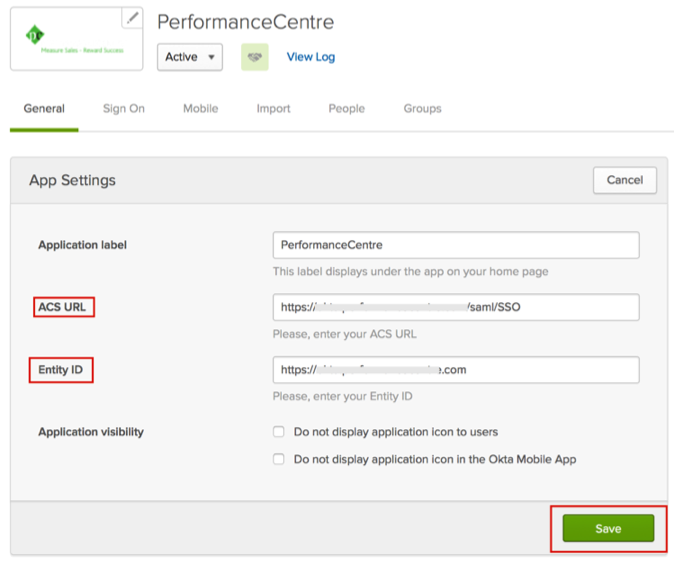

Send an email to PerformanceCentre Support and request that they enable SAML 2.0 for your account.
Attach the following IDP Metadata:
PerformanceCentre will provide you with the Entity ID and ACS URL that you will need to configure SAML in Okta.
In Okta, select the General tab for the PerformanceCentre app:
Enter the Entity ID and ACS URL values provided to you by PerformanceCentre:
Click Save.

Done!
Notes:
IdP-initiated flows and SP-initiated flows are supported.Just In Time (JIT) provisioning is not supported